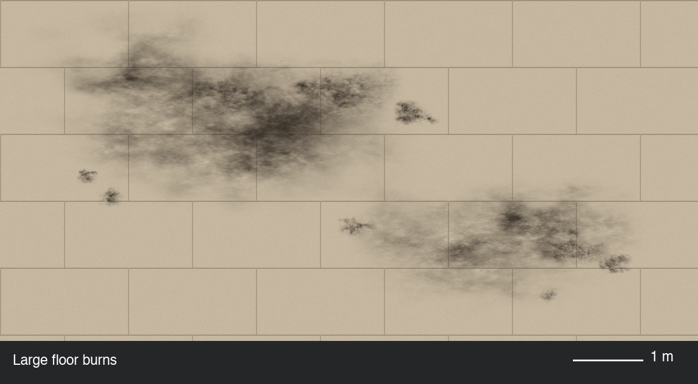
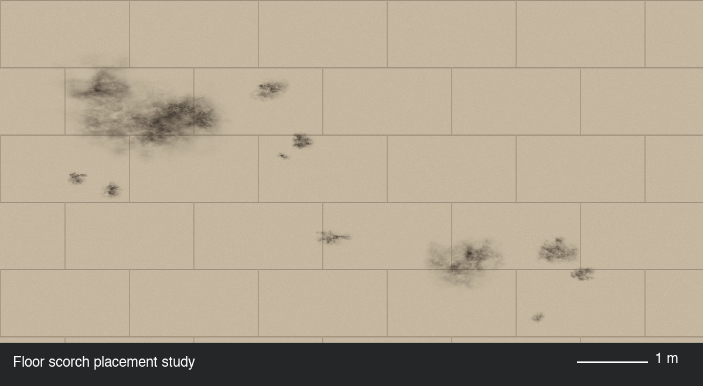
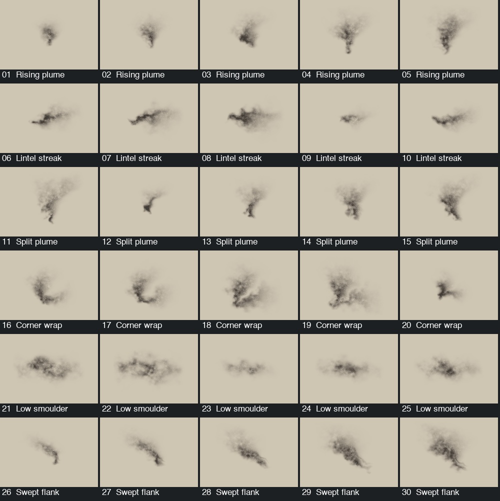

Two broad burns span several paving slabs. Smaller marks trail off around their edges. Compare the one-metre bars across both studies.

Twelve ground marks, shown together at one scale on sample paving. Small flecks trail away from broader patches. The open paving gives the damaged areas room to stand out.

Art direction based on the existing Unity view. Missing stone and broken trim carry the damage. Soot stays close to the fracture.
Choose marks by their source. Smoke rises from a recess, runs beneath a ledge or wraps a corner. Vary scale and strength between sites. Leave clean stretches of wall between affected areas.

Download grayscale atlas · Pattern coordinates and suggested sizes